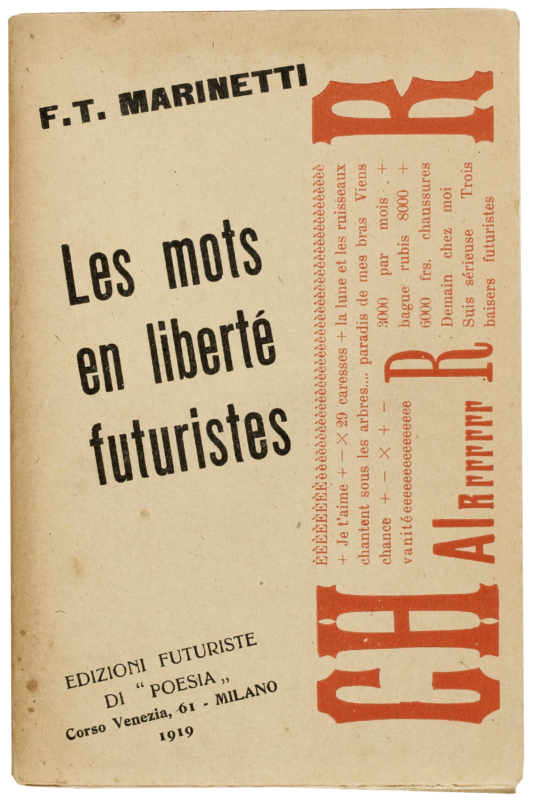
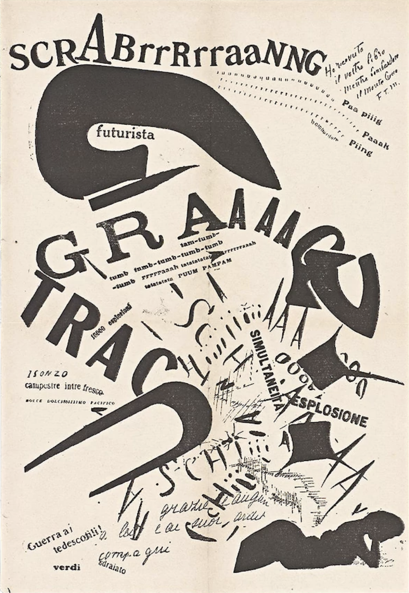
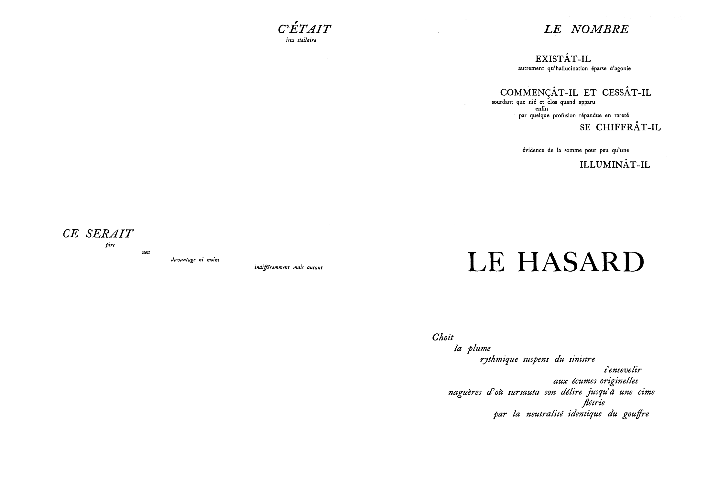
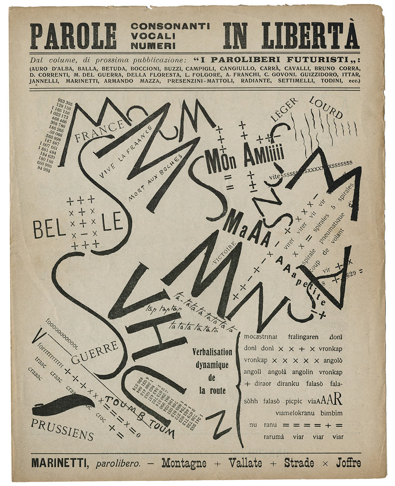

I have initiated a typographical revolution directed against the bestial, nauseating sort of book that contains passéist poetry or verse à la D’Annunzio — handmade paper that imitates models of the seventeenth century, festooned with helmets, Minervas, Apollos, decorative capitals in red ink with loops and squiggles, vegetables, mythological ribbons from missals, epigraphs, and Roman numerals.
The book must be the Futurist expression of Futurist thought. Not only that. My revolution is directed against the so-called typographical harmony of the page, which is contrary to the flux and reflux, the leaps and bursts of style that run through the page itself. For that reason we will use, in the very same page, three or four different colors of ink, and as many as twenty different typographical fonts if necessary. For example: italics for a series of swift or similar sensations, boldface for violent onomatopoeias, etc. The typographical revolution and the multicolored variety in the letters will mean that I can double the expressive force of words.

F.T. Marinetti 1919

F.T. Marinetti 1914

F.T. Marinetti 1919
I oppose the decorative and precious aesthetic of Mallarmé and his search for the exotic word, the unique and irreplaceable, elegant, suggestive, exquisite adjective. I have no wish to suggest an idea of sensation by means of passéist graces and affectations: I want to seize them brutally and fling them in the reader’s face. I also oppose Mallarmé’s static ideal.

Stéphane Mallarmé Un coup de dés jamais n'abolira le hasard, 1914

F.T. Marinetti Parole in Libertà (Words in Freedom), 1915
The typographic revolution that I’ve proposed will enable me to imprint words (words already free, dynamic, torpedoing forward) every velocity of the stars, clouds, airplanes, trains, waves, explosives, drops of seafoam, molecules, and atoms. And so I shall realize the fourth principle contained in my “First Manifesto of Futurism” (20 February 1909): We affirm that the beauty of the world has been enriched by a new form of beauty: the beauty of speed.
explosion
seafoam
airplane
trains